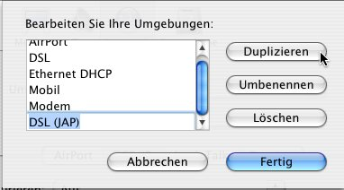

Alternative Browser Inhalt
Alternative Browser Inhalt  Browservorbereitung Alternative Browser Alternative Browser
Browservorbereitung Alternative Browser Alternative Browser Alternative Browser Inhalt
Browservorbereitung Alternative Browser Alternative Browser
JonDos empfiehlt den bereits fertig konfigurierten JonDoFox zum sicheren, anonymen Websurfen. Er ist als vollständiger Browser oder als Firefox-Profil für alle Betriebssysteme verfügbar.
Um JonDo in Safari einzurichten gehen Sie folgendermaßen vor:
Im Standard-Browser von MacOS X, Safari, kann kein Proxy direkt im Browser eingetragen werden. Der Proxy muss stattdessen in den Netzwerk-Systemeinstellungen eingetragen werden. Um ein einfaches Wechseln zwischen der Verwendung von JonDo und nicht-anonymen Surfen zu ermöglichen, wird beschrieben, wie Sie eine neue Netzwerkumgebung zur Verwendung des JonDo einrichten.
Wählen Sie in der Menüleiste den Apfel und dann Systemeinstellungen:

Im erscheinenden Fenster klicken Sie auf Netzwerk in der Gruppe Internet & Netzwerk:

Nun klicken Sie im Feld Umgebung auf Umgebungen bearbeiten...:

Wählen Sie die Umgebung aus, in der Sie normalerweise Ihre Internetverbindung aufbauen (im Beispiel ist dies die Umgebung DSL) und klicken Sie auf Duplizieren. Dann benennen Sie die Kopie der Umgebung so, dass Sie erkennen können, dass diese Umgebung den JonDo benutzt (im Beispiel DSL (JonDo)). Dann klicken Sie auf Fertig:
Wählen Sie nun die Umgebung aus, die Sie gerade angelegt haben.
Im Feld Zeigen wählen Sie das Netzwerkgerät aus, mit dem
Sie die Verbindung herstellen (im Beispiel Ethernet
(integriert)).
Jetzt klicken Sie auf Proxies. In der Liste Einen Proxy-Server
auswählen markieren Sie nun nacheinander die Felder FTP-Proxy,
Web-Proxy und Sicherer Web-Proxy. Immer wenn Sie eines der
Felder markiert haben, tragen Sie im rechten Teil des Fensters
"localhost" und 4001 ein.
Zuletzt tragen Sie noch im Feld Die Proxy-Einstellungen für
folgende Hosts und Domains nicht verwenden die Zeilen
localhost und 127.0.0.1 ein.
Wenn Sie alle Einstellungen vorgenommen haben, klicken Sie auf Jetzt
aktivieren, um in die neu erstellte Umgebung zu wechseln und JonDo
als Proxy in Safari zu verwenden:

Wollen Sie Adressen festlegen, für die JonDo nicht verwendet werden soll, so können Sie im unteren linken Feld diese Ausnahmen eintragen.
Hinweis:
Falls Sie im JonDo einen anderen Listenerport
eingestellt haben, müssen Sie diesen anstatt 4001 eintragen.
Wenn Sie JonDo nicht mehr verwenden wollen, wechseln Sie im
Apfelmenü in der Menüleiste wieder in Ihre alte Umgebung.
Alternative Browser Inhalt
Browservorbereitung Alternative Browser Alternative Browser